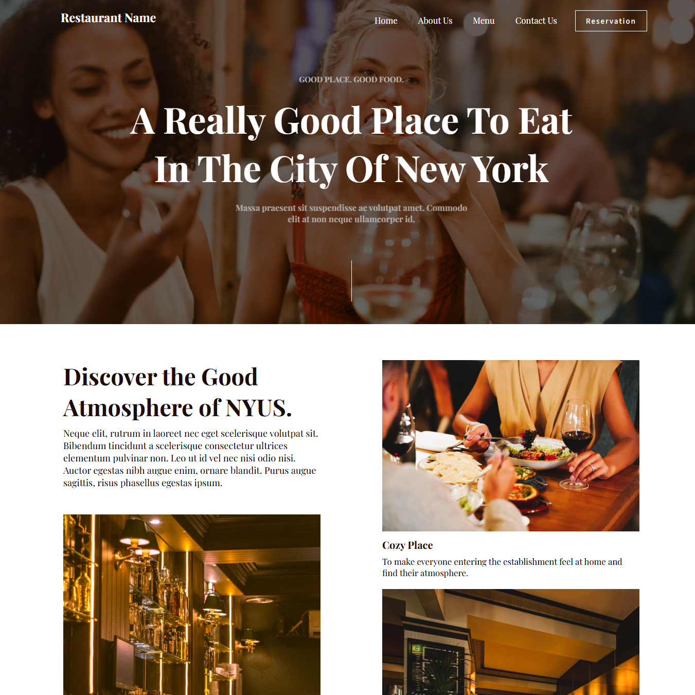
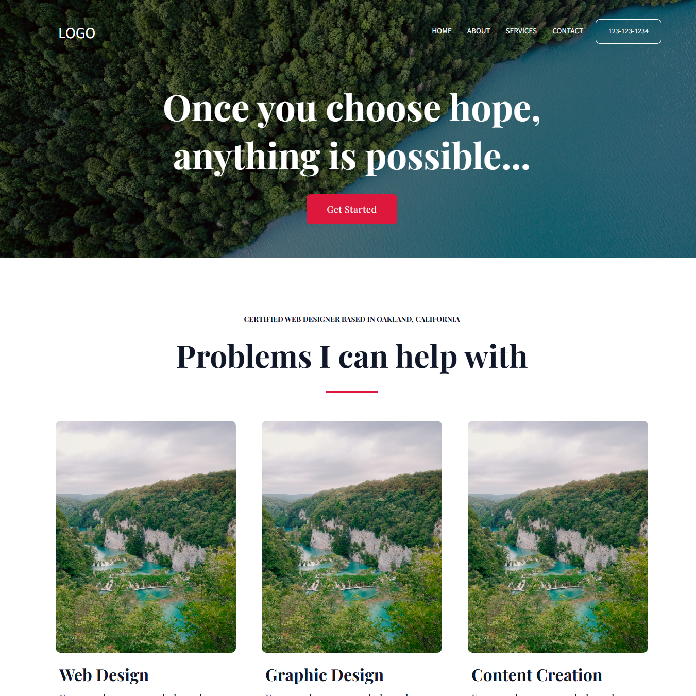
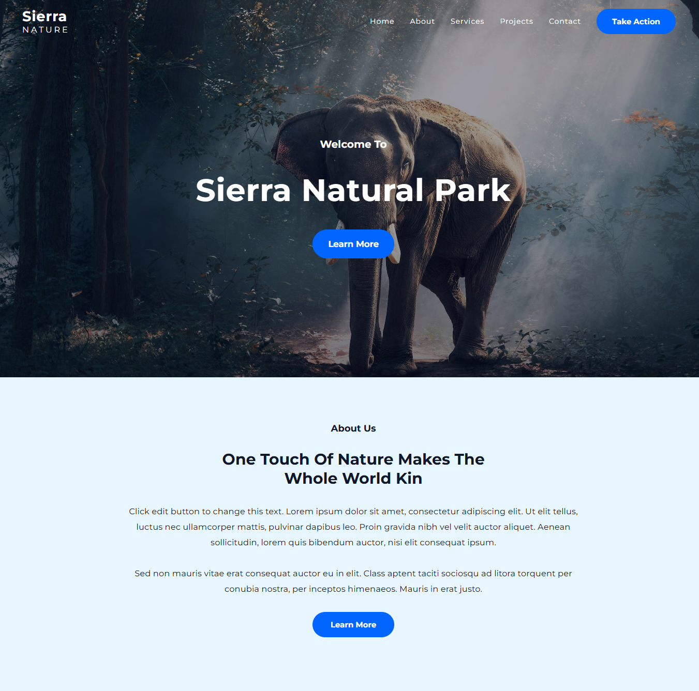
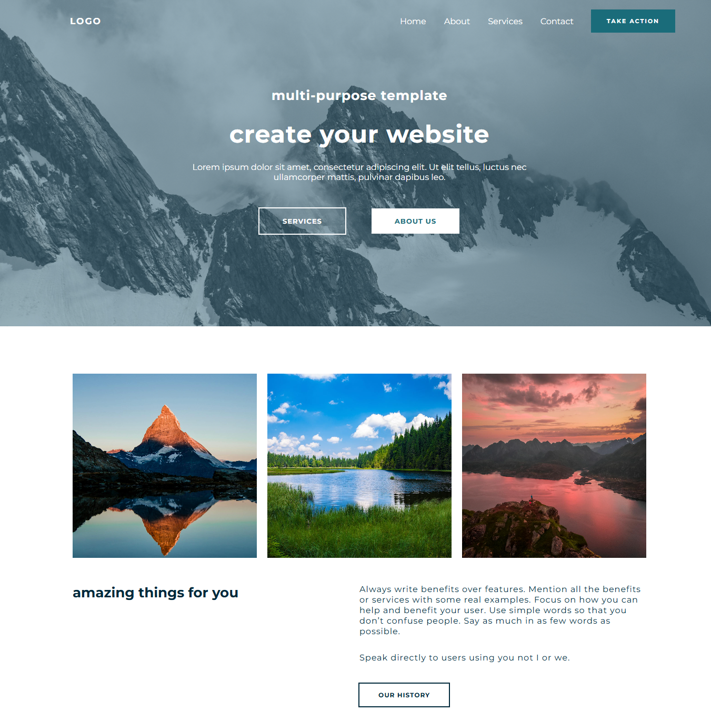

About me
I am a passionate frontend developer focusing on creating clean, responsive, and user-friendly websites.
I design professional & beautiful websites
I specialize in building websites using HTML, CSS, and JavaScript, ensuring that each project I work on is functional, visually appealing, and aligned with modern web standards.
Although I am at the beginning of my professional journey, I am highly motivated to deliver quality work and continuously improve my skills. I am currently open to small projects and collaborations, where I can bring real value while also gaining hands-on experience.
What I do
From understanding your requirements, designing a blueprint and delivering the final product, I do everything that falls in between these lines.
responsive design
I build responsive and user-friendly websites using HTML, CSS, and JavaScript, ensuring that each project works smoothly across different screen sizes and devices.
customize templates
In addition, I can customize ready-made templates and design engaging landing pages tailored for businesses or personal use, making sure the final result reflects the client’s goals and identity.
ui/ux design
I focus on delivering clean, well-structured code that follows modern web standards while also paying attention to UI/UX best practices, cross-browser compatibility, and overall performance.
Learning & Growth
My current focus is on mastering frontend development. Soon, I will be expanding my skills by learning React.js, which will allow me to build more dynamic, scalable, and interactive web applications. In the future, I plan to explore backend development as well, aiming to become a well-rounded full-stack developer.
Why Work With Me?
I bring an enthusiastic and detail-oriented approach to every project, ensuring that even small design or code elements receive the attention they deserve. This mindset helps me deliver polished, reliable websites that leave a positive impression on users.
I am strongly committed to continuous learning and growth, which means that with every project I take on, I aim to implement the latest best practices and improve my skillset. Clients can trust that I will always strive to provide high-quality results, even in smaller tasks.
Open communication is one of my priorities, as I believe that understanding the client’s vision is the key to a successful outcome. I am flexible and adaptable, ready to adjust my work process according to the client’s specific needs and feedback.
Portfolio



